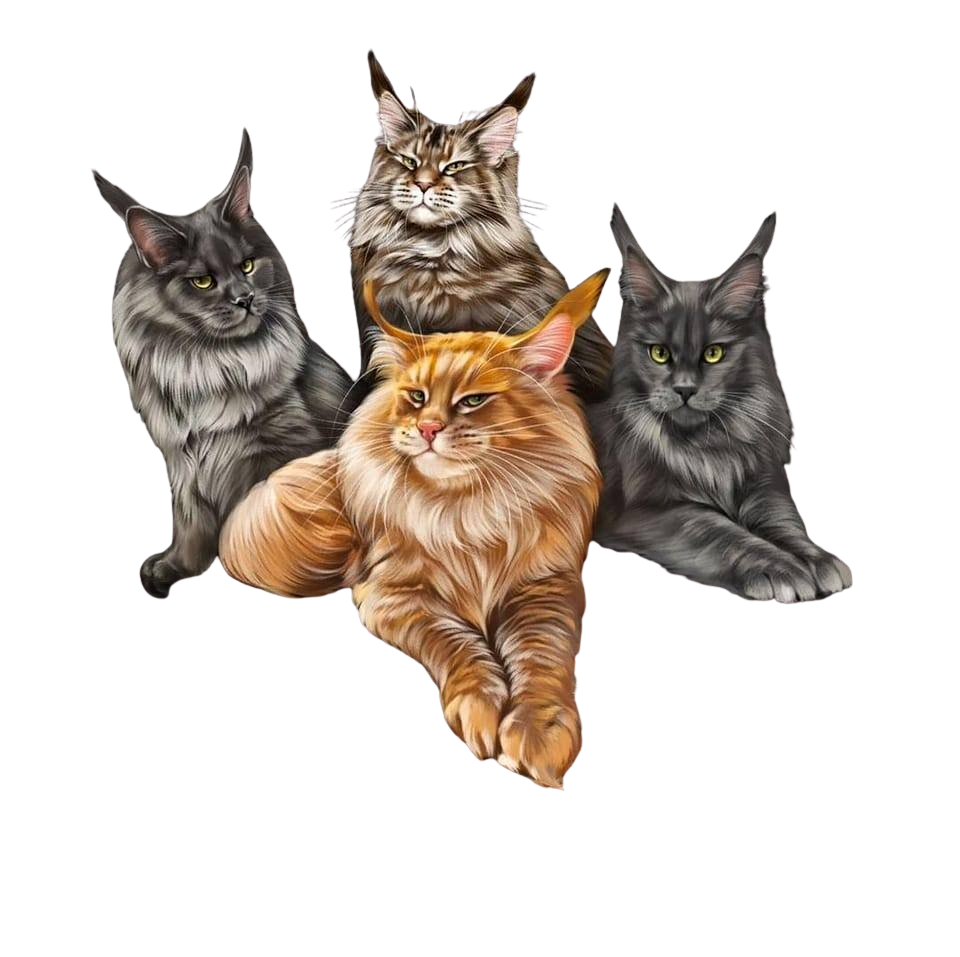

Резервирайте своя бъдещ котешки спътник
В Luxury Bellus Pride разбираме вълнението да посрещнеш нов космат приятел в живота си.
Имаме удоволствието да съобщим, че приемаме резервации за нашите котенца щом споделим приветстването на ново котило. Това ви позволява да осигурите специално място в сърцето си за едно от нашите великолепни котенца мейн куун.

| Услуга | Описание |
|---|---|
| Кръстете вашето мейн кун коте | Създайте специална връзка с вашето коте като се възползвате от възможност да изберете неговото име, което ще бъде вписано и в предоставеното от нас родословие. Разбираме, че даването на име на вашия нов любимец е лично и значимо изживяване и искаме да сте част от него. *На всяко котило се присвоява буква и всички котенца в това котило ще имат имена, които започват с тази конкретна буква. |
| Редовна информация за вашето запазено коте | Знаем колко сте нетърпеливи да станете свидетели на израстването и развитието на вашия бъдещ спътник. Бъдете сигурни, след като резервирате коте от нашия развъдник, ние ще ви държим в течение с редовни снимки и информация за напредъка на вашето мъниче. Сякаш сте част от техния живот от самото начало. |
| Здрави и добре подготвени котенца | Нашите мейн кун котенца са отгледани с любов и грижа в чиста и грижовна среда. Преди да тръгнат на път към новите си домове, всяко коте ще бъде подложено на ваксинация и обезпаразитяване, за да се гарантира, че е във възможно най-доброто здраве. Освен това, всяко коте ще дойде с паспорт и престижно WCF родословие, доказателство за тяхното потекло. |
| Специален подаръчен пакет | За да помогнем на вашия нов член на семейството да се приспособи плавно във вашия дом, всяко коте ще бъде снабдено с подаръчна торбичка Luxury Bellus Pride. В нея ще намерите играчки и запас от суха и мокра храна, с която котенцето е свикнало. Вярваме, че познатото начало ще помогне на вашето коте да се настани с лекота в новата среда. |